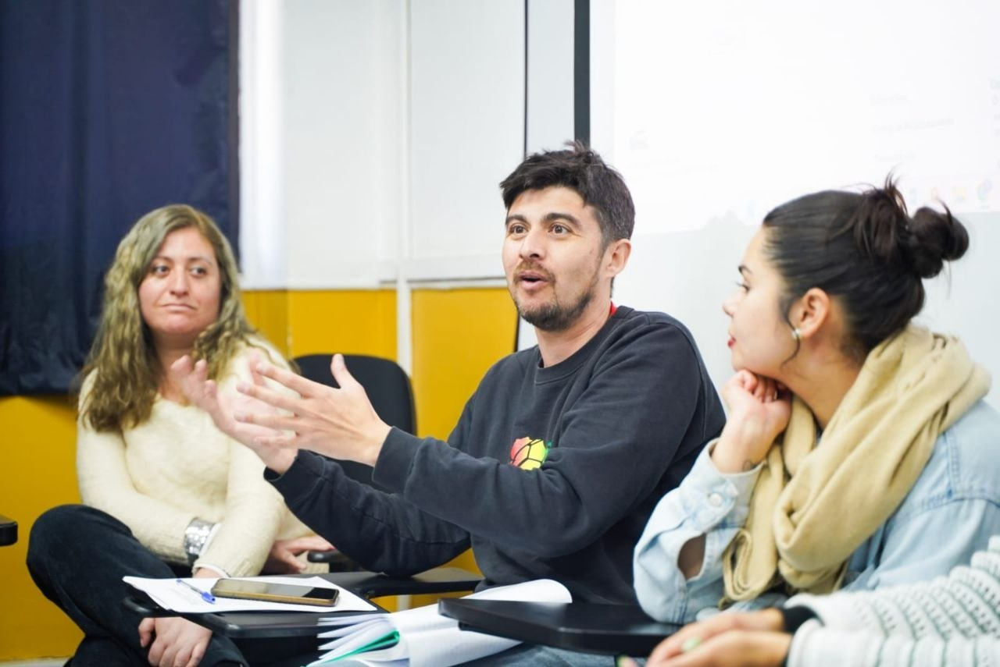
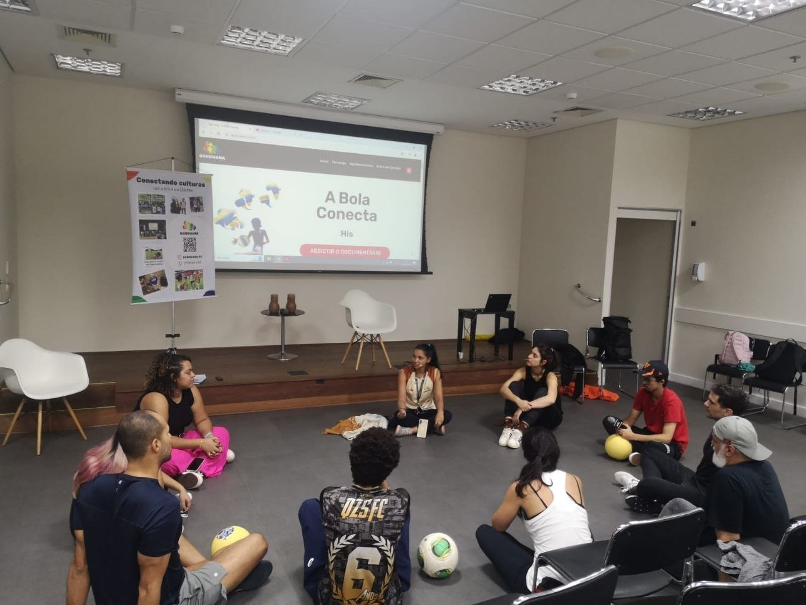
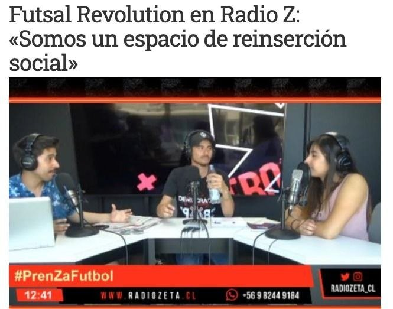

mídia
síntese / a figura inteira
Sebastián pensa com a bola em campo aberto.
A trajetória reúne mentalidade de atleta, escuta de educador, gesto de pesquisador, fala pública, arquivo de campo e circulação em comunidades, universidades, mídia e projetos sociais.


Corpo. Técnica, rito, memória de atleta.
Método. Roda, escuta, jogo, pergunta.
Palavra. Aula, palco, pesquisa, pensamento.
Circulação. Mídia, universidade, território, projeto.
corpo que lê
O jogo começa no corpo que aprendeu a perceber.
A experiência de atleta entra como inteligência prática. Antes do conceito, há ritmo, antecipação, equilíbrio, queda, recomeço, atenção ao espaço e leitura do outro.
método em presença
A roda transforma uma bola em linguagem comum.

palavra pública
A bola no palco mantém a ideia com os pés no chão.
Quando aparece em conferências, aulas e debates, a bola segue funcionando como pergunta. Ela liga Paulo Freire, inovação esportiva, território e experiência vivida.


Uma pergunta ganha força quando encontra lugares diferentes para ser escutada.

projeto social
A bola como espaço de reinserção.
síntese editorial
A mistura é o próprio método: viver o jogo, observar o mundo, transformar experiência em linguagem pública.
direção recomendada
A home pode assumir esta figura inteira: atleta que pensa, educador que escuta, pesquisador que escreve, articulador que circula, pessoa que transforma jogo em leitura de mundo.